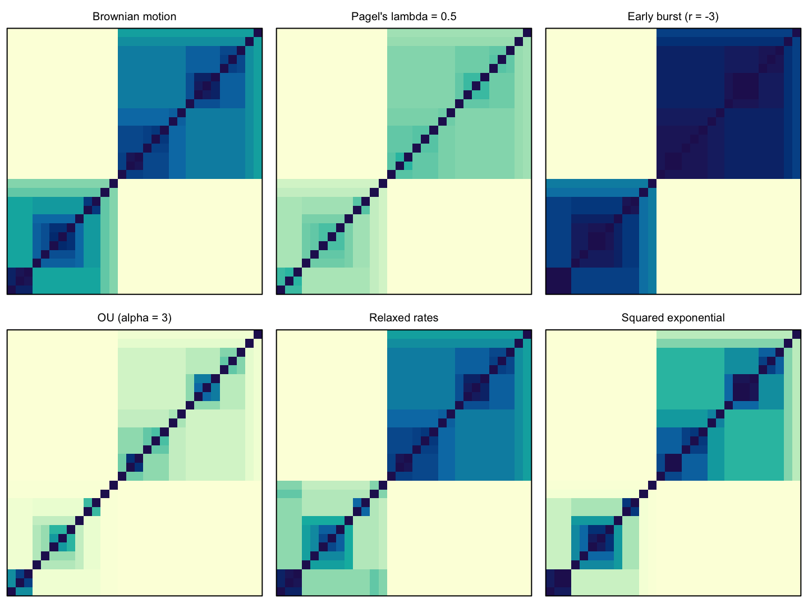
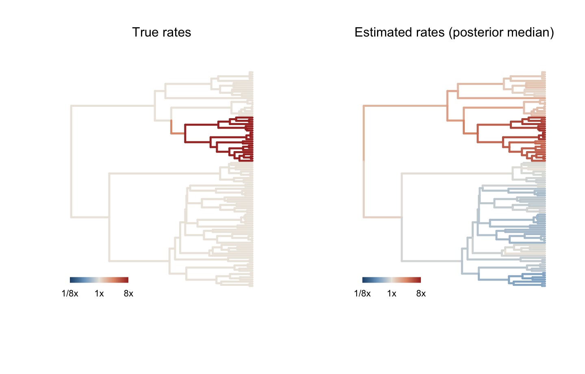

Phylogenetic comparative models as Gaussian processes.
phylogp fits models of continuous trait evolution as Gaussian processes on a phylogeny. A model is a kernel, the covariance it implies between species, and kernels are built by adding components:
library(phylogp)
k_bm() + k_white() # Brownian motion + residual (= Pagel's lambda)
k_ou(root = "fixed") # Ornstein-Uhlenbeck
k_relaxed() + k_white() # autocorrelated (relaxed) rates
k_rate_time(n_bins = 20) + k_white() # rate as a smooth function of time
k_bm() + k_dist(geo_dist) + k_white() # phylogeny + geography
k_bm() + k_slope("body") * k_bm() + k_white() # slopes that evolve along the tree
k_bm() + k_white(df = 4) # Student-t residuals
k_edge("pow(len, kappa) .* exp(beta * he)", # your own branch-wise kernel
pars = list(kappa = c(0, 1), beta = c(-5, 5)))
The same tree seen through six kernels: Brownian motion, Pagel’s λ, early burst, Ornstein–Uhlenbeck, relaxed rates and a squared-exponential kernel.
phylogp writes the Stan program for the kernel, compiles it once and fits it with cmdstanr, by maximum likelihood or HMC. Whenever every component has the branch-wise form (variance accumulated along edges), the likelihood is evaluated by the O(N) pruning recursion and leave-one-out predictive densities by an O(N) two-pass message passing; otherwise it falls back to dense algebra.

A relaxed-rate kernel finds a clade evolving 8 times faster, without being told where it is (from vignette("phylogp")).
Designing kernels
Before fitting, check what a kernel implies and whether it is valid on your tree:
tr <- ape::rtree(50) # a tree with tips at different heights
kernel_check(k_dist(phi = "sqexp"), tr) # squared exponential: can fail here
kernel_check(k_dist(phi = "exponential"), tr) # exponential (= OU): always valid
kernel_plot(k_ou(), tr, pars = list(ou1 = list(alpha = 3)))
kernel_equivalent(k_ou(root = "fixed"), k_eb(upper = 50), tr) # same model at the tips?
y <- kernel_simulate(k_relaxed() + k_white(), tr) # prior predictive draws
cat(kernel_stancode(k_bm() + k_white())) # the generated Stan programkernel_check() uses the theory first: branch-wise kernels are valid whenever their edge variances are non-negative; on ultrametric trees any non-increasing function of patristic distance is valid; on trees with fossil tips or without a clock only completely monotone functions (such as the exponential) are guaranteed. Where validity is not guaranteed it checks numerically over a grid of parameter values.
Fitting
fit <- phylo_gp(brain ~ body, data = d, tree = tr,
kernel = k_relaxed() + k_white())
fit
loo(fit) # PSIS-LOO from exact conditional densities
loo_refit(fit) # exact LOO for influential species
phylo_gp_trees(brain ~ body, d, trees, k_lambda()) # over a sample of trees
predict(fit, newdata = new) # species without data (kriging on the tree)
ml <- phylo_gp(brain ~ body, data = d, tree = tr,
kernel = k_lambda(), method = "optimize")
logLik(ml); AIC(ml)Maximum-likelihood fits of the classical kernels (BM, Pagel’s lambda, kappa, delta, early burst, OU with fixed or random root) reproduce phylolm to numerical precision; this comparison is part of the test suite.
Installation
# fitting needs cmdstanr and CmdStan (install these first so the vignettes can run)
install.packages(c("remotes", "cmdstanr"),
repos = c("https://stan-dev.r-universe.dev", getOption("repos")))
cmdstanr::install_cmdstan()
# the package, with its vignettes (takes a few minutes: they fit Stan models)
remotes::install_github("ThomasPueschel/phylogp", build_vignettes = TRUE)
browseVignettes("phylogp")For a quicker install without the vignettes, drop build_vignettes = TRUE; the tutorials are also on the package website.
Kernel design tools (kernel_matrix(), kernel_check(), kernel_plot(), kernel_simulate(), kernel_loglik(), kernel_stancode()) work without Stan.
Learn more
-
vignette("phylogp"): getting started, a complete analysis of simulated data with a fast-evolving clade. -
vignette("model-tour"): a tour of models, from Brownian motion and PGLS to measurement error, several individuals per species, rates through time and phylogeny plus geography, with model choice, prediction and ancestral states. -
vignette("kernel-design"): building your own kernels, checking that they are valid on your tree, and when two kernels are the same model. -
vignette("slopes-prediction"): slopes that evolve along the tree, influential species, predicting species without data, ancestral states, and robust residuals.
Background and references
The models in phylogp are not new; what the package adds is a common kernel form for them, checks of their validity, and linear-time computation. Each component builds on earlier work:
| Model or method | Builds on |
|---|---|
| Brownian motion and phylogenetic regression | Felsenstein 1973, 1985; Grafen 1989; Martins & Hansen 1997 |
Phylogenetic mixed model (k_bm() + k_white()) |
Lynch 1991; Housworth et al. 2004; Hadfield & Nakagawa 2010 |
| Pagel’s λ, κ and δ | Pagel 1999 |
| Early burst | Blomberg et al. 2003; Harmon et al. 2010 |
| Ornstein–Uhlenbeck | Hansen 1997; Butler & King 2004 |
Relaxed (autocorrelated) rates, k_relaxed()
|
Thorne & Kishino 2002; Eastman et al. 2011; Venditti et al. 2011; Revell 2021; Fisher et al. 2021 |
Rates through time, k_rate_time()
|
Blomberg et al. 2003; Harmon et al. 2010; Clavel & Morlon 2017 |
Phylogeny plus space, k_dist()
|
Freckleton & Jetz 2009; Guzmán Naranjo & Becker 2022; Hartmann & Jäger 2023 |
Evolving slopes, k_slope()
|
Lande 1979; Pagel & Harvey 1989; Hadfield & Nakagawa 2010 |
| Measurement error and several individuals per species | Ives et al. 2007 |
| Linear-time likelihoods | Felsenstein 1973; Ho & Ané 2014a |
| Gaussian processes and kernel design | Rasmussen & Williams 2006; Duvenaud et al. 2013; on phylogenies, Jones & Moriarty 2013 |
| Kernel validity on trees | Schoenberg 1938; Dellacherie et al. 2014 |
| OU and accelerating early burst as one model | Ho & Ané 2014b; Uyeda et al. 2015 |
| Leave-one-out cross-validation | Vehtari et al. 2017 |
| Prediction and ancestral states | Schluter et al. 1997; Garland & Ives 2000 |
| Stan | Carpenter et al. 2017 |
The vignettes cite these works where they are used, and the help page of each component lists its references.
Full references
- Blomberg S.P., Garland T., Ives A.R. 2003. Testing for phylogenetic signal in comparative data: Behavioral traits are more labile. Evolution. 57:717–745.
- Butler M.A., King A.A. 2004. Phylogenetic comparative analysis: A modeling approach for adaptive evolution. The American Naturalist. 164:683–695.
- Carpenter B., Gelman A., Hoffman M.D., Lee D., Goodrich B., Betancourt M., Brubaker M., Guo J., Li P., Riddell A. 2017. Stan: A probabilistic programming language. Journal of Statistical Software. 76:1–32.
- Clavel J., Morlon H. 2017. Accelerated body size evolution during cold climatic periods in the Cenozoic. Proceedings of the National Academy of Sciences of the USA. 114:4183–4188.
- Dellacherie C., Martínez S., San Martín J. 2014. Inverse M-matrices and ultrametric matrices. Cham: Springer.
- Duvenaud D., Lloyd J., Grosse R., Tenenbaum J., Ghahramani Z. 2013. Structure discovery in nonparametric regression through compositional kernel search. Proceedings of the 30th international conference on machine learning. 28:1166–1174.
- Eastman J.M., Alfaro M.E., Joyce P., Hipp A.L., Harmon L.J. 2011. A novel comparative method for identifying shifts in the rate of character evolution on trees. Evolution. 65:3578–3589.
- Felsenstein J. 1973. Maximum-likelihood estimation of evolutionary trees from continuous characters. American Journal of Human Genetics. 25:471–492.
- Felsenstein J. 1985. Phylogenies and the comparative method. The American Naturalist. 125:1–15.
- Fisher A.A., Ji X., Zhang Z., Lemey P., Suchard M.A. 2021. Relaxed random walks at scale. Systematic Biology. 70:258–267.
- Freckleton R.P., Jetz W. 2009. Space versus phylogeny: Disentangling phylogenetic and spatial signals in comparative data. Proceedings of the Royal Society B. 276:21–30.
- Garland T. Jr., Ives A.R. 2000. Using the past to predict the present: Confidence intervals for regression equations in phylogenetic comparative methods. The American Naturalist. 155:346–364.
- Grafen A. 1989. The phylogenetic regression. Philosophical Transactions of the Royal Society of London B. 326:119–157.
- Guzmán Naranjo M., Becker L. 2022. Statistical bias control in typology. Linguistic Typology. 26:605–670.
- Hadfield J.D., Nakagawa S. 2010. General quantitative genetic methods for comparative biology: Phylogenies, taxonomies and multi-trait models for continuous and categorical characters. Journal of Evolutionary Biology. 23:494–508.
- Hansen T.F. 1997. Stabilizing selection and the comparative analysis of adaptation. Evolution. 51:1341–1351.
- Harmon L.J., Losos J.B., Davies T.J., Gillespie R.G., Gittleman J.L., Jennings W.B., others. 2010. Early bursts of body size and shape evolution are rare in comparative data. Evolution. 64:2385–2396.
- Hartmann F., Jäger G. 2023. Gaussian process models for geographic controls in phylogenetic trees. Open Research Europe. 3:57.
- Ho L. si T., Ané C. 2014a. A linear-time algorithm for Gaussian and non-Gaussian trait evolution models. Systematic Biology. 63:397–408.
- Ho L. si T., Ané C. 2014b. Intrinsic inference difficulties for trait evolution with Ornstein-Uhlenbeck models. Methods in Ecology and Evolution. 5:1133–1146.
- Housworth E.A., Martins E.P., Lynch M. 2004. The phylogenetic mixed model. The American Naturalist. 163:84–96.
- Ives A.R., Midford P.E., Garland T. 2007. Within-species variation and measurement error in phylogenetic comparative methods. Systematic Biology. 56:252–270.
- Jones N.S., Moriarty J. 2013. Evolutionary inference for function-valued traits: Gaussian process regression on phylogenies. Journal of the Royal Society Interface. 10:20120616.
- Lande R. 1979. Quantitative genetic analysis of multivariate evolution, applied to brain:body size allometry. Evolution. 33:402–416.
- Lynch M. 1991. Methods for the analysis of comparative data in evolutionary biology. Evolution. 45:1065–1080.
- Martins E.P., Hansen T.F. 1997. Phylogenies and the comparative method: A general approach to incorporating phylogenetic information into the analysis of interspecific data. The American Naturalist. 149:646–667.
- Pagel M. 1999. Inferring the historical patterns of biological evolution. Nature. 401:877–884.
- Pagel M.D., Harvey P.H. 1989. Taxonomic differences in the scaling of brain on body weight among mammals. Science. 244:1589–1593.
- Rasmussen C.E., Williams C.K.I. 2006. Gaussian processes for machine learning. Cambridge, MA: MIT Press.
- Revell L.J. 2021. A variable-rate quantitative trait evolution model using penalized-likelihood. PeerJ. 9:e11997.
- Schluter D., Price T., Mooers A.Ø., Ludwig D. 1997. Likelihood of ancestor states in adaptive radiation. Evolution. 51:1699–1711.
- Schoenberg I.J. 1938. Metric spaces and positive definite functions. Transactions of the American Mathematical Society. 44:522–536.
- Thorne J.L., Kishino H. 2002. Divergence time and evolutionary rate estimation with multilocus data. Systematic Biology. 51:689–702.
- Uyeda J.C., Caetano D.S., Pennell M.W. 2015. Comparative analysis of principal components can be misleading. Systematic Biology. 64:677–689.
- Vehtari A., Gelman A., Gabry J. 2017. Practical Bayesian model evaluation using leave-one-out cross-validation and WAIC. Statistics and Computing. 27:1413–1432.
- Venditti C., Meade A., Pagel M. 2011. Multiple routes to mammalian diversity. Nature. 479:393–396.
Citation
If you use phylogp, please cite the paper (currently a preprint):
Püschel, T. A. 2026. Gaussian processes on phylogenies: a kernel framework for building, checking and comparing models of trait evolution. EcoEvoRxiv. doi:10.32942/X2D99V
and, for the version you used, the software:
Püschel, T. A. 2026. phylogp: phylogenetic comparative models as Gaussian processes, version 0.2.0. Zenodo. doi:10.5281/zenodo.23472027
In R, citation("phylogp") gives both references, with BibTeX entries.